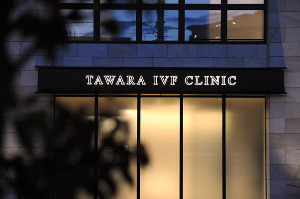

ホーム > クリニックの組織・部門について
クリニックの組織・部門について

当院は以下の5部署よりなり、診療にあたり各部門が協力しながら診療にあたっています。
・医師部門
・培養部門
・診療部門
・事務部門
・鍼灸部門
医師部門
◎医師…8名
- 生殖医療専門医：3名
- 臨床遺伝専門医：1名
- 日本産科婦人科学会専門医：6名
- 泌尿器科専門医：1名
- 母体保護法指定医：3名
- 臨床研修指導医：1名
- 医学博士：4名
- 日本がん治療認定医
- 日本医師会認定産業医
- 日本東洋医学会専門医：1名
- 日本産科婦人科内視鏡学会技術認定医：1名
- 日本抗加齢医学会専門医：1名
- 日本温泉気候物理医学会温泉療法医：1名
培養部門
◎胚培養部門…8名
- 日本卵子学会認定生殖補助医療胚培養士：2名
- 日本臨床エンブリオロジスト学会認定臨床エンブリオロジスト：1名
- 臨床検査技師：1名
- 培養アシスタント：1名
◎システム･研究部門…2名
- 工学博士：1名
- SE：1名
診療部門
◎看護部門：看護師…11名・准看護師…1名
- 助産師：4名
- 生殖医療相談士：1名
- 日本不妊カウンセリング学会認定体外受精コーディネーター：1名
- 日本アロマ環境協会認定アロマインストラクター：1名
- 日本余暇文化振興会認定健康・食育マスター1級：1名
◎検査部門：臨床検査技師…1名・検査助手…1名
◎診療アシスタント部門：診療アシスタント…6名
- 栄養士：1名
- 調理士：1名
◎看護助手…2名
事務部門
◎受付部門…4名
◎医事部門…2名
◎医療クラーク部門…4名
- 生殖医療相談士：1名
鍼灸部門
◎鍼灸部門…3名
- はり師：3名
- きゅう師：3名
- 日本不妊カウンセリング学会認定不妊カウンセラー：1名
- 鍼灸学修士：1名
 ページの先頭へ
ページの先頭へ